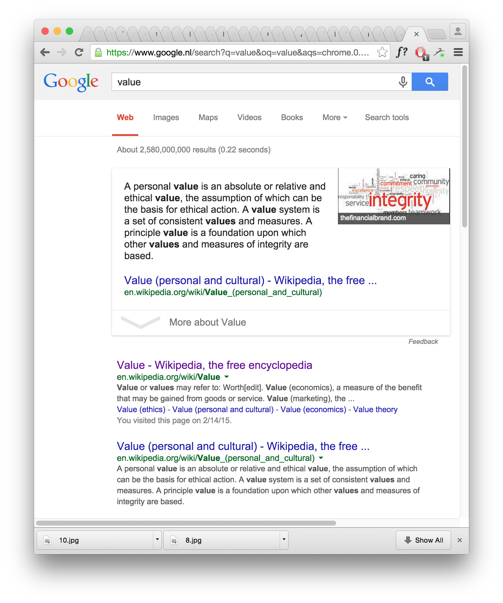
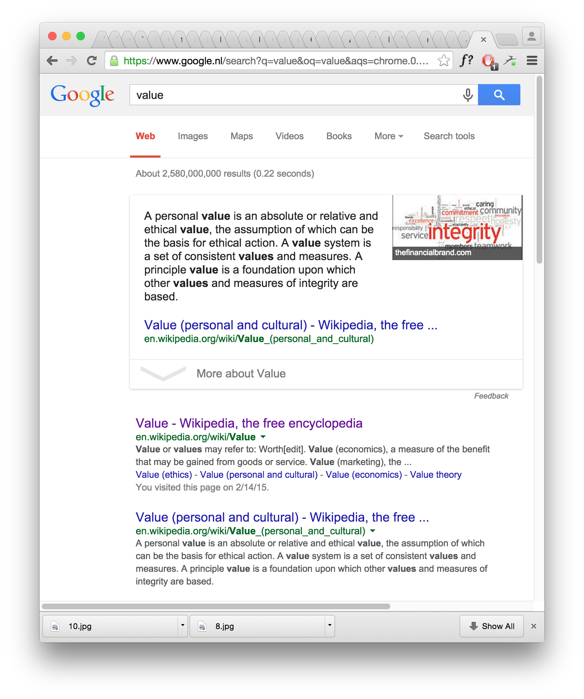

Recontextualizing Value/Meaning
How can recontextualizing
change the value/meaning of an object?
What is value? How to create something of value?
Does it need to be radical to be valuable?
The audience should be the general public
The goal is to explore how value and meaning can change through excecution of a project. By juxtapozing imagery, playing with mediums, and our expectations I want to explore in the topic with different approaches:
Coding
3d
Installation
Collage (digital and physical)
Design
Curation
Interventions
"Searching for values design looks in the visual places"
"The content and effectiveness of communication have become strongly context-dependent, not least because the audience with whom the message communicates has itself matured"
– Max Bruinsma, 1999
"The context influences your message"
– Cox & Grusenmeyer
"To explore the role of design in relation to the public and political discourse through experimental visual design"
– Sandberg Institute
George Orwell thought that to write against something gave his work more value, more of a purpose.
I would like to work with a project that allows me to be both shallow and more content based (deep), where one aspect can lend from the other. With this project I want to use "shallow" visual explorations to understand how value and meaning can be affected by the context they are placed in. By later curating the visual reaserch, using tools such as narration, or story telling, to convey the projects less subjective aspect.


 
